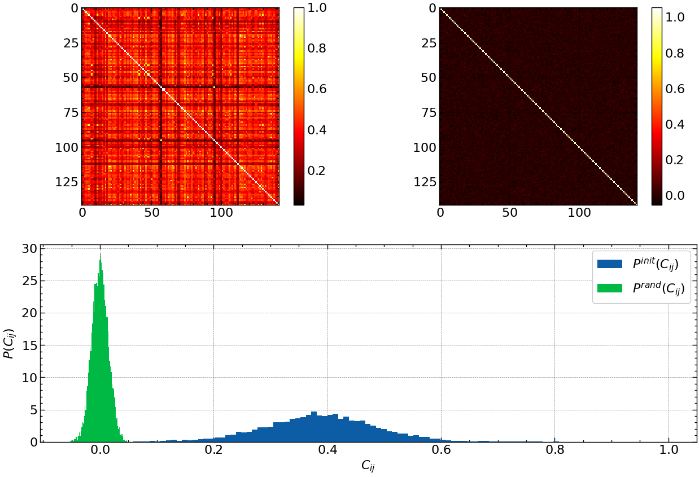
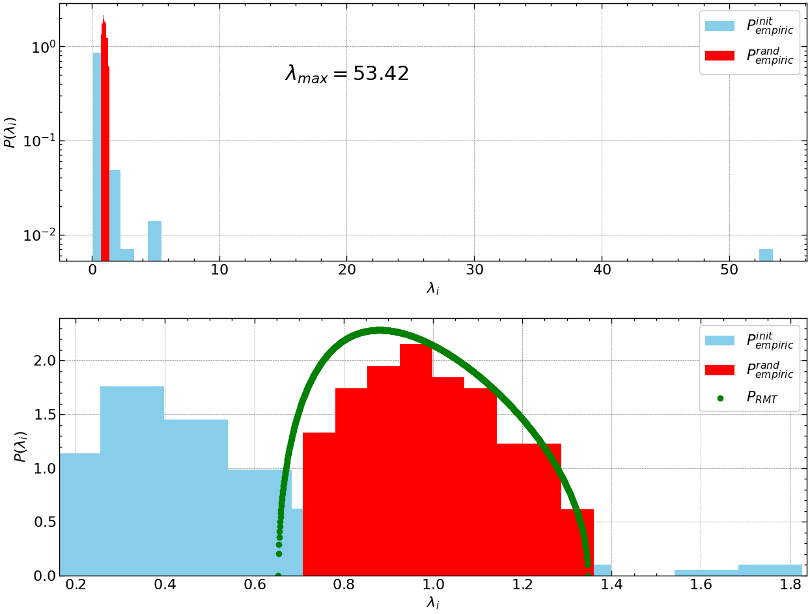
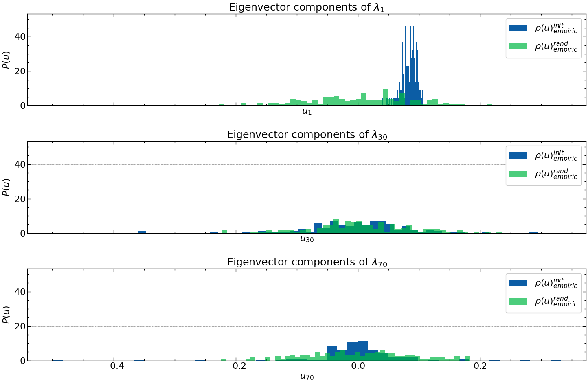
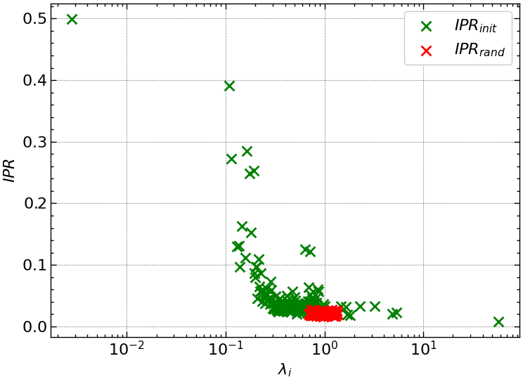

import numpy as np
import matplotlib.pyplot as plt
import matplotlib.gridspec as gridspec
import pandas as pd
import yfinance as yf
import scienceplots
import requests8 Дослідження процесів самоорганізації в складних системах із використання теорії випадкових матриць
Мета. Навчитись використовувати методи теорії випадкових матриць для отримання «прихованої» інформації в складних економічних системах.
8.1 Теоретичні відомості
Вивчення статистичних властивостей матриць з незалежними випадковими елементами — випадкових матриць — має багату історію, що починається з ядерної фізики, де проблема з’явилася 50 років тому при дослідженні енергетичних рівнів складних ядер, що існуючі на той час моделі були не в змозі пояснити. Теорія випадкової матриці (ТВМ) була розвинена в цьому контексті Вігнером (Wigner), Дайсоном (Dyson), Метою (Mehta) та іншими для пояснення статистики рівнів енергії складних квантових систем. Дослідники постулювали, що функція Гамільтона, яка описує важкі ядра, може бути задана матрицею \(H\) з незалежними випадковими елементами \(H_{ij}\), отриманими з розподілу імовірності. Відштовхуючись від цього припущення було зроблено низку вражаючих передбачень, які було підтверджено експериментально. Для складних квантових систем передбачення на основі ТВМ представляють середнє за всіма можливими взаємодіями. Відхилення від універсальних передбачень ТВМ відображують системну специфіку, невипадкові властивості системи, забезпечуючи ключові підходи до розуміння базової взаємодії системи. Недавні дослідження, що використовували методи аналізу ТВМ до аналізу властивостей матриці взаємних кореляцій \(C\), показують, що близько 98% власних значень матриці C співпадають зі значеннями, отримуваними з використанням ТВМ, таким чином пропонуючи задовільний рівень хаотичності у вимірюваних крос-кореляціях. Також було знайдено, що існують відхилення від передбачень за допомогою ТВМ у близько 2% найбільших власних значень. Ці результати викликають наступні питання:
- Яка можлива інтерпретація для відхилень від ТВМ?
- Що можна сказати про структуру C з цих результатів?
- Яке практичне значення отриманих результатів?
Шляхом комп’ютерного моделювання виявлено, що найбільше власне значення матриці \(C\) представляє вплив усього ринку, що є звичайним для всіх акцій. Аналіз змісту власних значень, що відхиляються від ТВМ, показує існування взаємних кореляцій між акціями того ж самого типу промисловості, найбільш капіталізованими акціями, і акціями фірм, що мають бізнес у певному географічному секторі (локалізовані територіально). Обчислюючи скалярний добуток власних векторів від одного періоду часу до наступного, можна побачити, що “власні вектори, що відхиляються”, мають різні ступені стабільності в часі, визначеному кількісно величиною скалярного добутку. Найбільші два-три власних вектори стійкі протягом тривалих періодів часу, у той час як для іншої частини власних векторів, що відхиляються, стабільність у часі зменшується як тільки відповідні власні значення наближаються до верхньої межі ТВМ.
8.1.1 Знаходження коефіцієнтів матриці крос-кореляцій
Визначення кореляцій між різними акціями — тема, цікава не лише з точки зору наукових причин розуміння економіки як складної динамічної системи, але також і з практичних поглядів, зокрема, з точки зору розміщення активів і оцінки портфельного ризику. Ми будемо аналізувати взаємні кореляції між акціями, застосовуючи поняття і методи теорії випадкових матриць, що використовуються в контексті складних квантових систем, де точний характер взаємодій між підодиницями невідомий.
Для визначення кількісно кореляцій спочатку обчислюється зміна цін (прибутковості) акції \(i=1,...,N\) за час \(\Delta t\),
\[ G_{i}(t) = \ln S_i(t+\Delta t) - \ln S_i(t), \tag{8.1}\]
де \(S_i(t)\) позначає ціну акції \(i\). Оскільки різні ціни мають різні рівні змінюванності (стандартні відхилення), визначатимемо стандартизовану прибутковість
\[ g_i(t) \equiv \frac{G_i(t) - \left\langle G_i \right\rangle}{\sigma_i}, \tag{8.2}\]
де \(\sigma_i \equiv \sqrt{\left\langle G_{i}^{2} \right\rangle - \left\langle G_i \right\rangle^{2}}\) — стандартне відхилення \(G_i\), а \(\left\langle...\right\rangle\) позначає середнє значення за досліджуваний період часу. Тобі обчислення кореляцій \(C\) зводиться до обчислення формули:
\[ C_{ij} \equiv \left\langle g_i(t)g_j(t) \right\rangle. \tag{8.3}\]
Згідно з побудовою елементи \(C_{ij}\) обмежені областю \(−1 \leq C_{ij} \leq 1\), де \(C_{ij} = 1\) відповідає повним кореляціям, \(C_{ij} = -1\) — повним антикореляціям, і \(C_{ij} = 0\) свідчить про некорельованність пар акцій.
Труднощі в аналізі важливості та значення коефіцієнтів крос-кореляції \(C_{ij}\) виникають внаслідок кількох причин, що полягають в наступному:
- ринкові умови з часом змінюються і взаємна кореляція, що існує між будь-якою парою акцій, може бути не постійною (нестаціонарною);
- скінчена довжина досліджуваного ряду, доступного для оцінювання взаємних кореляцій, додає так званий “шум вимірювання” — чим коротший досліджуваний ряд — тим менш точними будуть отримувані значення.
Якщо буде використано довгий ряд для вилучення проблеми скінченної довжини, на отримані значення буде впливати нестаціонарність крос-кореляцій. З цих причин, емпірично виміряні крос-кореляції будуть містити “випадкові” складові, і найбільш важливою (і одночасно важкою проблемою) є оцінка в складі матриці \(C\) таких взаємних кореляцій, що не є результатом випадковості.
Яким же чином можна виділяти з \(C_{ij}\) ті акції, що залишилися корельованими на розглядуваному періоді часу? Щоб відповісти на це питання, перевіримо статистику \(C\) у порівнянні із так званою “нульовою гіпотезою” випадкової кореляційної матриці — матриці кореляцій, побудованої із взаємно некорельованих часових рядів. Якщо властивості \(C\) відповідають властивостям для випадкової матриці кореляцій, тоді можна говорити про те, що значення емпірично вимірюваних властивостей \(C\) випадкові. Навпаки, відхилення властивостей \(C\) від таких же властивостей для випадкової кореляційної матриці передає інформацію про “справжні” кореляції. Таким чином, нашою метою є порівняння властивостей \(C\) з такими ж властивостями випадкової матриці кореляцій і розділ властивостей \(C\) на дві групи: (a) частина \(C\), що відповідає властивостям випадкової кореляційної матриці (“шум”) і (b) частина \(C\), що відхиляється (“інформація”).
8.1.2 Розподіл власних значень
Для отримання інформації про взаємні кореляції \(C\) необхідно порівняти властивості \(C\) з такими ж властивостями випадкової матриці крос-кореляцій. У матричній нотації така матриця може бути виражена як
\[ C = \frac{1}{L} GG^{T}, \tag{8.4}\]
де \(G\) — матриця розміру \(N \times L\) з елементами \(g_{im}=g_i(m\Delta t), i=1,...,N; m=0,...,L-1\) і \(G^{T}\) позначає транспонування \(G\). Розглянемо випадкову кореляційну матрицю
\[ R = \frac{1}{L} AA^{T}, \tag{8.5}\]
де \(A\) — матриця розміру \(N \times L\), що містить \(N\) часових рядів із \(L\) випадковими елементів \(a_{im}\) з нульовим середнім і одиничним відхиленням, що означають взаємну некорельованість.
Статистичні властивості випадкових матриць \(R\) відомі. Зокрема, у наближенні \(N \to \infty\), \(L \to \infty\), такому, що \(Q \equiv \frac{L}{N}(>1)\) фіксоване, показано аналітично, що функція розподілу щільності імовірності \(P_{rm}(\lambda)\) власних значень \(\lambda\) випадкової матриці кореляції \(R\) визначається як
\[ P_{rm}(\lambda) = \frac{Q}{2\pi}\frac{\sqrt{(\lambda_{+} - \lambda)(\lambda - \lambda_{-})}}{\lambda} \tag{8.6}\]
де \(\lambda\) в межах границь \(\lambda_{-} \leq \lambda_{i} \leq \lambda_{+}\), де \(\lambda_{-}\) і \(\lambda_{+}\) — найменше та найбільше власні значення \(R\), які можна визначити аналітично як
\[ \lambda_{\pm} = 1 + \frac{1}{Q} \pm 2\sqrt{\frac{1}{Q}}. \tag{8.7}\]
Звертаємо вашу увагу, що вираз (Рівняння 8.6) є точним для випадку розподілених за Гаусом матричних елементів \(a_{im}\).
Порівняємо розподіл власних значень \(P(\lambda)\) для \(C\) з \(P_{rm}(\lambda)\). Для цього обчислимо власні значення \(\lambda_i\) матриці \(C\), причому \(\lambda_i\) впорядкуємо за зростанням (\(\lambda_{i+1} > \lambda_{i}\)). При дослідженнях зверніть увагу на присутність чіткої “великої частини” власних значень, що спадають у межах границь \([\lambda_{-}, \lambda_{+}]\) для \(P_{rm}(\lambda)\). Також зверніть увагу на відхилення для деяких найбільших і найменших власних значень власних значень отриманих за допомогою ТВМ.
Оскільки рівняння (Рівняння 8.6) є таким, що строго відповідає лише для \(L \to \infty\) і \(N \to \infty\), необхідно перевірити також відхилення від ідеального випадку, оскільки робота проводиться завжди із скінченими рядами. При дослідженнях виявляється, що для кількох найбільших (найменших) власних значень ефект впливу скінчених величин \(L\) і \(N\) відсутній.
8.1.3 Обернене відношення участі
Вивчивши інтерпретацію найбільшого власного значення, що значно відхиляється від результатів ТВМ, зосередимось на власних значеннях, що залишаються. Відхилення розподілу компонентів власного вектора \(u_k\) від ТВМ Гаусового передбачення більш явне, коли відстань від верхньої границі ТВМ \(\lambda_k --- \lambda_{+}\) збільшується. Оскільки близькість до \(\lambda_{+}\) збільшує ефекти хаотичності визначаємо кількість компонентів, що беруть значну участь в кожному власному векторі, що, у свою чергу, відображає ступінь відхилення від ТВМ для розподілу компонентів власного вектора. Для цього використовується поняття оберненого відношення участі (ОВУ), що часто застосовується в теорії локалізації. ОВУ власного вектора \(u_k\) визначається як
\[ I^{k} \equiv \sum_{l=1}^{N}\left[ u_{l}^{k} \right]^4, \tag{8.8}\]
де \(u_{l}^{k}\), \(l=1,...,N\) — компоненти власного вектора \(u^{k}\). Значення \(I^{k}\) може бути проілюстровано двома граничними випадками:
- вектор з ідентичними компонентами \(u_{l}^{k} \equiv \frac{1}{\sqrt{N}}\) має \(I^{k}=\frac{1}{N}\);
- вектор з одним компонентом \(u_{1}^{k}=1\) і нульовими іншими має \(I^{k}=1\).
Таким чином, ОВУ визначає кількість даних з числа компонентів власного вектора, що значний впливають на ринок, заданий системою часових рядів. Наявність векторів з великими значеннями \(I^{k}\) також виникає в теорії локалізації Андерсона. У контексті теорії локалізації часто знаходять “випадкову смугу матриць”, що містять узагальнені стани з маленьким \(I^{k}\) в більшій частині спектра власних значень, тоді як основні стани локалізовані і мають великі \(I^{k}\). Виявлення локалізованих станів для маленьких і великих власних значень матриці крос-кореляцій \(C\) нагадує про локалізацію Андерсона і припускає, що C може мати випадкову зону матричної структури.
8.2 Хід роботи
Імпортуємо необхідні бібліотеки:
Визначаємо стиль рисунків:
plt.style.use(['science', 'notebook', 'grid']) # стиль, що використовуватиметься
# для виведення рисунків
params = {
'figure.figsize': (8, 6), # встановлюємо ширину та висоту рисунків за замовчуванням
'font.size': 22, # розмір фонтів рисунку
'lines.linewidth': 2, # товщина ліній
'axes.titlesize': 'small', # розмір титулки над рисунком
"font.family": "sans-serif", # сімейство стилів підписів
"font.serif": ["Times"], # стиль підпису
'savefig.dpi': 300 # якість збережених зображень
}
plt.rcParams.update(params) # оновлення стилю згідно налаштуваньВиконуємо парсинг та фільтрацію заголовків акцій компаній:
headers = {
'authority': 'api.nasdaq.com',
'accept': 'application/json, text/plain, */*',
'user-agent': 'Mozilla/5.0 (Windows NT 10.0; Win64; x64) AppleWebKit/537.36 (KHTML, like Gecko) Chrome/87.0.4280.141 Safari/537.36',
'origin': 'https://www.nasdaq.com',
'sec-fetch-site': 'same-site',
'sec-fetch-mode': 'cors',
'sec-fetch-dest': 'empty',
'referer': 'https://www.nasdaq.com/',
'accept-language': 'en-US,en;q=0.9',
}
params = (
('tableonly', 'true'),
('limit', '25'),
('offset', '0'),
('download', 'true'),
)
r = requests.get('https://api.nasdaq.com/api/screener/stocks', headers=headers, params=params)
data = r.json()['data']
df = pd.DataFrame(data['rows'], columns=data['headers'])
df = df.dropna(subset={'marketCap'})
df = df[~df['symbol'].str.contains("\/|\.|\^")]
df.head()| symbol | name | lastsale | netchange | pctchange | marketCap | country | ipoyear | volume | sector | industry | url | |
|---|---|---|---|---|---|---|---|---|---|---|---|---|
| 0 | A | Agilent Technologies Inc. Common Stock | $103.68 | -1.96 | -1.855% | 30335448465.00 | United States | 1999 | 2255378 | Industrials | Electrical Products | /market-activity/stocks/a |
| 1 | AA | Alcoa Corporation Common Stock | $23.86 | 0.42 | 1.792% | 4257807575.00 | United States | 2016 | 4466232 | Industrials | Aluminum | /market-activity/stocks/aa |
| 2 | AAC | Ares Acquisition Corporation Class A Ordinary ... | $10.77 | -0.01 | -0.093% | 760407880.00 | 2021 | 62409 | Industrials | Metal Fabrications | /market-activity/stocks/aac | |
| 3 | AACG | ATA Creativity Global American Depositary Shares | $1.02 | -0.0089 | -0.865% | 32254613.00 | China | 2008 | 2205 | Real Estate | Other Consumer Services | /market-activity/stocks/aacg |
| 4 | AACIW | Armada Acquisition Corp. I Warrant | $0.0869 | -0.0011 | -1.25% | 0.00 | United States | 2021 | 1100 | Finance | Blank Checks | /market-activity/stocks/aaciw |
Фільтруємо та сортуємо заголовків акцій за їх капіталізацією:
def cust_filter(mkt_cap):
if 'M' in mkt_cap:
return float(mkt_cap[1:-1])
elif 'B' in mkt_cap:
return float(mkt_cap[1:-1]) * 1000
elif mkt_cap == '':
return 0.0
else:
return float(mkt_cap[1:]) / 1e6
df['marketCap'] = df['marketCap'].apply(cust_filter)
df = df.sort_values('marketCap', ascending=False)
df.head()| symbol | name | lastsale | netchange | pctchange | marketCap | country | ipoyear | volume | sector | industry | url | |
|---|---|---|---|---|---|---|---|---|---|---|---|---|
| 18 | AAPL | Apple Inc. Common Stock | $171.13 | -2.31 | -1.332% | 675486.122160 | United States | 1980 | 42331738 | Technology | Computer Manufacturing | /market-activity/stocks/aapl |
| 2995 | GOOG | Alphabet Inc. Class C Capital Stock | $126.83 | -13.29 | -9.485% | 599199.470000 | United States | 2004 | 53289059 | Technology | Computer Software: Programming Data Processing | /market-activity/stocks/goog |
| 2996 | GOOGL | Alphabet Inc. Class A Common Stock | $125.74 | -13.07 | -9.416% | 585455.660000 | United States | 2004 | 74470572 | Technology | Computer Software: Programming Data Processing | /market-activity/stocks/googl |
| 4477 | MSFT | Microsoft Corporation Common Stock | $340.64 | 10.11 | 3.059% | 530874.714262 | United States | 1986 | 47823790 | Technology | Computer Software: Prepackaged Software | /market-activity/stocks/msft |
| 408 | AMZN | Amazon.com Inc. Common Stock | $121.35 | -7.21 | -5.608% | 252059.059095 | United States | 1997 | 64091789 | Consumer Discretionary | Catalog/Specialty Distribution | /market-activity/stocks/amzn |
Визначаємо найпередовіші акцій за їх капіталізацією:
top = 200
tickers_list = df.iloc[:top]['symbol'].tolist()
tickers_list[:10]['AAPL', 'GOOG', 'GOOGL', 'MSFT', 'AMZN', 'ACN', 'JNJ', 'UNH', 'CRM', 'CVX']Зчитуємо дані з Yahoo Finance згідно створенного списку акцій:
start = "2001-12-31"
end = "2023-10-25"
data = yf.download(tickers_list, start, end)["Adj Close"]perc = 15.0
min_count = int(((100-perc)/100)*data.shape[0] + 1)
data = data.dropna(axis=1, thresh=min_count)
data| AAPL | ABEV | ABT | ACN | ADBE | ADI | ADM | AEP | AJG | ALGN | ... | UMC | UNH | UNP | UPS | USB | VZ | WAB | WBA | WMT | XOM | |
|---|---|---|---|---|---|---|---|---|---|---|---|---|---|---|---|---|---|---|---|---|---|
| Date | |||||||||||||||||||||
| 2001-12-31 | 0.331940 | 0.284807 | 14.984421 | 19.391699 | 15.452659 | 28.258896 | 8.876992 | 17.383923 | 17.229757 | 4.500000 | ... | 5.445520 | 14.341557 | 9.328089 | 30.550997 | 10.333235 | 14.899984 | 5.713787 | 21.294720 | 38.050945 | 19.562269 |
| 2002-01-02 | 0.353160 | 0.308827 | 15.008622 | 18.880259 | 15.845818 | 28.870066 | 8.765649 | 17.551651 | 16.954994 | 4.300000 | ... | 5.502246 | 14.270626 | 9.262628 | 30.528564 | 10.145625 | 15.223347 | 5.709141 | 20.927788 | 38.381516 | 19.711603 |
| 2002-01-03 | 0.357404 | 0.308827 | 15.022054 | 18.289566 | 16.462925 | 30.340626 | 8.672853 | 17.427837 | 16.635281 | 4.480000 | ... | 5.655399 | 14.110528 | 9.603023 | 31.089142 | 10.194989 | 15.728803 | 5.685913 | 21.769201 | 38.335255 | 19.741465 |
| 2002-01-04 | 0.359072 | 0.308827 | 14.995178 | 19.953571 | 17.866358 | 30.525229 | 8.351183 | 17.280088 | 16.395493 | 4.500000 | ... | 5.604348 | 14.185517 | 9.819044 | 31.756222 | 10.387536 | 15.888925 | 5.690561 | 21.864094 | 38.083977 | 19.910711 |
| 2002-01-07 | 0.347097 | 0.308827 | 14.890349 | 19.053135 | 17.995752 | 29.824961 | 8.307875 | 17.551651 | 15.915917 | 5.010000 | ... | 5.485228 | 14.094323 | 9.807585 | 32.014091 | 10.362858 | 15.791589 | 5.597654 | 22.066544 | 37.945133 | 19.736490 |
| ... | ... | ... | ... | ... | ... | ... | ... | ... | ... | ... | ... | ... | ... | ... | ... | ... | ... | ... | ... | ... | ... |
| 2023-10-18 | 175.839996 | 2.450000 | 95.559998 | 303.769989 | 557.869995 | 171.270004 | 74.519997 | 75.169998 | 234.339996 | 272.399994 | ... | 7.400000 | 536.059998 | 205.919998 | 153.820007 | 33.369999 | 31.049999 | 101.660004 | 21.250000 | 161.539993 | 112.949997 |
| 2023-10-19 | 175.460007 | 2.450000 | 95.440002 | 302.940002 | 555.739990 | 168.720001 | 73.839996 | 74.419998 | 231.029999 | 270.290009 | ... | 7.550000 | 531.630005 | 210.330002 | 152.059998 | 32.750000 | 31.580000 | 100.080002 | 20.959999 | 160.770004 | 113.019997 |
| 2023-10-20 | 172.880005 | 2.460000 | 96.779999 | 297.000000 | 540.960022 | 166.520004 | 72.849998 | 73.349998 | 227.570007 | 269.880005 | ... | 7.430000 | 527.030029 | 211.339996 | 151.960007 | 30.930000 | 31.570000 | 99.699997 | 21.260000 | 158.759995 | 111.080002 |
| 2023-10-23 | 173.000000 | 2.450000 | 95.779999 | 294.940002 | 540.409973 | 163.869995 | 72.400002 | 73.349998 | 227.699997 | 265.720001 | ... | 7.420000 | 521.570007 | 207.759995 | 148.160004 | 31.260000 | 31.389999 | 98.739998 | 21.959999 | 161.009995 | 109.449997 |
| 2023-10-24 | 173.440002 | 2.500000 | 94.809998 | 296.089996 | 539.559998 | 164.929993 | 69.470001 | 74.739998 | 231.210007 | 265.459991 | ... | 7.440000 | 525.000000 | 205.440002 | 149.320007 | 31.389999 | 34.299999 | 99.940002 | 21.370001 | 163.250000 | 108.389999 |
5492 rows × 142 columns
data = data.dropna(axis=0)
data| AAPL | ABEV | ABT | ACN | ADBE | ADI | ADM | AEP | AJG | ALGN | ... | UMC | UNH | UNP | UPS | USB | VZ | WAB | WBA | WMT | XOM | |
|---|---|---|---|---|---|---|---|---|---|---|---|---|---|---|---|---|---|---|---|---|---|
| Date | |||||||||||||||||||||
| 2004-11-19 | 0.836216 | 0.891186 | 13.159102 | 18.311184 | 28.898273 | 25.516338 | 13.569958 | 16.210627 | 15.971463 | 10.660000 | ... | 2.426260 | 33.161335 | 10.805549 | 48.411308 | 16.340147 | 14.549393 | 9.954161 | 24.456373 | 37.230267 | 27.068447 |
| 2004-11-22 | 0.929887 | 0.891186 | 13.196038 | 18.181520 | 29.717941 | 25.196583 | 13.628675 | 16.572975 | 15.960764 | 10.530000 | ... | 2.386915 | 33.266834 | 10.863768 | 48.889122 | 16.428463 | 14.510458 | 10.188372 | 24.552650 | 37.520027 | 27.353210 |
| 2004-11-23 | 0.928674 | 0.881304 | 13.005194 | 18.152706 | 30.322697 | 24.947168 | 13.700435 | 16.606346 | 16.030344 | 10.370000 | ... | 2.393473 | 33.481903 | 10.882599 | 48.830856 | 16.555431 | 14.503373 | 10.075955 | 24.526987 | 37.499813 | 27.509014 |
| 2004-11-24 | 0.970811 | 0.885795 | 13.048287 | 18.620935 | 30.422657 | 24.883221 | 13.811342 | 16.782764 | 16.383600 | 10.240000 | ... | 2.413146 | 33.380447 | 10.874038 | 48.825005 | 16.505745 | 14.475060 | 10.118112 | 24.738817 | 37.398727 | 27.664825 |
| 2004-11-26 | 0.978389 | 0.888490 | 13.109851 | 18.685766 | 30.317698 | 24.748922 | 13.843967 | 16.787535 | 16.394304 | 10.300000 | ... | 2.354128 | 34.037830 | 10.856913 | 48.901012 | 16.527834 | 14.524616 | 10.207114 | 24.790161 | 37.277443 | 27.750805 |
| ... | ... | ... | ... | ... | ... | ... | ... | ... | ... | ... | ... | ... | ... | ... | ... | ... | ... | ... | ... | ... | ... |
| 2023-10-09 | 178.990005 | 2.530000 | 96.227318 | 310.721283 | 529.289978 | 173.320007 | 73.900002 | 73.660004 | 233.110001 | 283.940002 | ... | 7.090000 | 526.510010 | 204.300003 | 154.339996 | 32.009998 | 31.450001 | 103.370003 | 22.270000 | 155.839996 | 110.919998 |
| 2023-10-10 | 178.389999 | 2.600000 | 97.022911 | 311.029999 | 532.719971 | 175.970001 | 74.150002 | 74.230003 | 233.490005 | 286.510010 | ... | 7.170000 | 524.239990 | 206.350006 | 155.550003 | 32.590000 | 31.760000 | 104.940002 | 22.379999 | 157.600006 | 110.449997 |
| 2023-10-11 | 179.800003 | 2.600000 | 92.129997 | 312.540009 | 549.909973 | 174.919998 | 73.699997 | 75.279999 | 234.899994 | 277.519989 | ... | 7.250000 | 524.130005 | 209.479996 | 155.300003 | 32.509998 | 31.459999 | 105.739998 | 22.600000 | 158.229996 | 106.489998 |
| 2023-10-12 | 180.710007 | 2.540000 | 90.190002 | 304.359985 | 559.630005 | 173.600006 | 72.769997 | 73.480003 | 233.440002 | 268.000000 | ... | 7.210000 | 525.539978 | 207.990005 | 155.380005 | 32.259998 | 30.910000 | 104.010002 | 24.190001 | 158.949997 | 106.470001 |
| 2023-10-13 | 178.850006 | 2.550000 | 90.870003 | 301.829987 | 548.760010 | 171.070007 | 73.320000 | 74.470001 | 233.880005 | 265.989990 | ... | 7.100000 | 539.400024 | 207.750000 | 155.080002 | 32.169998 | 30.670000 | 102.570000 | 23.250000 | 159.830002 | 109.870003 |
4757 rows × 142 columns
data = data.T
data| Date | 2004-11-19 | 2004-11-22 | 2004-11-23 | 2004-11-24 | 2004-11-26 | 2004-11-29 | 2004-11-30 | 2004-12-01 | 2004-12-02 | 2004-12-03 | ... | 2023-10-02 | 2023-10-03 | 2023-10-04 | 2023-10-05 | 2023-10-06 | 2023-10-09 | 2023-10-10 | 2023-10-11 | 2023-10-12 | 2023-10-13 |
|---|---|---|---|---|---|---|---|---|---|---|---|---|---|---|---|---|---|---|---|---|---|
| AAPL | 0.836216 | 0.929887 | 0.928674 | 0.970811 | 0.978389 | 1.037351 | 1.016282 | 1.027499 | 0.988393 | 0.950046 | ... | 173.750000 | 172.399994 | 173.660004 | 174.910004 | 177.490005 | 178.990005 | 178.389999 | 179.800003 | 180.710007 | 178.850006 |
| ABEV | 0.891186 | 0.891186 | 0.881304 | 0.885795 | 0.888490 | 0.888490 | 0.880405 | 0.880405 | 0.872140 | 0.872140 | ... | 2.550000 | 2.500000 | 2.550000 | 2.490000 | 2.540000 | 2.530000 | 2.600000 | 2.600000 | 2.540000 | 2.550000 |
| ABT | 13.159102 | 13.196038 | 13.005194 | 13.048287 | 13.109851 | 13.060599 | 12.915928 | 13.313013 | 13.442290 | 13.368418 | ... | 95.202988 | 95.262657 | 95.123428 | 95.670395 | 96.346657 | 96.227318 | 97.022911 | 92.129997 | 90.190002 | 90.870003 |
| ACN | 18.311184 | 18.181520 | 18.152706 | 18.620935 | 18.685766 | 18.685766 | 18.685766 | 19.312466 | 19.514151 | 19.463741 | ... | 306.986786 | 304.965179 | 308.112122 | 308.380981 | 310.900543 | 310.721283 | 311.029999 | 312.540009 | 304.359985 | 301.829987 |
| ADBE | 28.898273 | 29.717941 | 30.322697 | 30.422657 | 30.317698 | 30.357683 | 30.267721 | 30.782511 | 31.142366 | 31.467232 | ... | 521.130005 | 507.029999 | 518.419983 | 516.440002 | 526.679993 | 529.289978 | 532.719971 | 549.909973 | 559.630005 | 548.760010 |
| ... | ... | ... | ... | ... | ... | ... | ... | ... | ... | ... | ... | ... | ... | ... | ... | ... | ... | ... | ... | ... | ... |
| VZ | 14.549393 | 14.510458 | 14.503373 | 14.475060 | 14.524616 | 14.581252 | 14.595415 | 14.726393 | 14.839680 | 14.875080 | ... | 31.096254 | 31.311655 | 30.880852 | 31.154999 | 30.850000 | 31.450001 | 31.760000 | 31.459999 | 30.910000 | 30.670000 |
| WAB | 9.954161 | 10.188372 | 10.075955 | 10.118112 | 10.207114 | 9.977583 | 9.635630 | 9.523204 | 9.659050 | 9.354569 | ... | 105.239998 | 104.500000 | 105.000000 | 102.099998 | 102.930000 | 103.370003 | 104.940002 | 105.739998 | 104.010002 | 102.570000 |
| WBA | 24.456373 | 24.552650 | 24.526987 | 24.738817 | 24.790161 | 24.687454 | 24.507723 | 25.021250 | 24.982733 | 25.021250 | ... | 22.420000 | 22.549999 | 22.290001 | 22.180000 | 21.809999 | 22.270000 | 22.379999 | 22.600000 | 24.190001 | 23.250000 |
| WMT | 37.230267 | 37.520027 | 37.499813 | 37.398727 | 37.277443 | 35.815193 | 35.080688 | 35.592808 | 35.714092 | 35.666939 | ... | 160.100006 | 159.089996 | 161.000000 | 159.080002 | 156.410004 | 155.839996 | 157.600006 | 158.229996 | 158.949997 | 159.830002 |
| XOM | 27.068447 | 27.353210 | 27.509014 | 27.664825 | 27.750805 | 27.600348 | 27.535883 | 27.482151 | 26.955626 | 27.009338 | ... | 115.629997 | 115.830002 | 111.500000 | 108.989998 | 107.169998 | 110.919998 | 110.449997 | 106.489998 | 106.470001 | 109.870003 |
142 rows × 4757 columns
8.2.1 Знаходження коефіцієнтів матриці крос-кореляцій
log_ret = data.pct_change(axis=1).iloc[:,1:]
log_ret = log_ret.values
log_ret = (log_ret - np.mean(log_ret, axis=1, keepdims=True)) / np.std(log_ret, axis=1, keepdims=True)N, T = log_ret.shapeC = (1/T)*np.dot(log_ret, log_ret.T)
di = np.diag_indices(N)
ccoef = np.ma.asarray(C)
ccoef[di] = np.ma.masked
ccoef_flat = ccoef.compressed()np.random.seed(1234)
random_stocks = np.random.normal(size=(N,T))
R = (1/T)*np.dot(random_stocks, random_stocks.T)
di_rand = np.diag_indices(N)
ccoef_rand = np.ma.asarray(R)
ccoef_rand[di_rand] = np.ma.masked
ccoef_flat_rand = ccoef_rand.compressed()fig = plt.figure(figsize=(15, 10))
gs = gridspec.GridSpec(2, 2)
ax1 = fig.add_subplot(gs[0, 0])
im1 = ax1.imshow(C, cmap='hot', interpolation='nearest')
fig.colorbar(im1, ax=ax1)
ax2 = fig.add_subplot(gs[0, 1])
im2 = ax2.imshow(R, cmap='hot', interpolation='nearest')
fig.colorbar(im2, ax=ax2)
ax3 = fig.add_subplot(gs[1, :])
ax3.hist(ccoef_flat, bins='auto', density=True, label=r'$P^{init}(C_{ij})$')
ax3.hist(ccoef_flat_rand, bins='auto', density=True, label=r'$P^{rand}(C_{ij})$')
ax3.set_xlabel(r'$C_{ij}$')
ax3.set_ylabel(r'$P(C_{ij})$')
ax3.legend()
fig.align_labels()
plt.show();
8.2.2 Розподіл власних значень та векторів
w, v = np.linalg.eig(C)
w_rand, v_rand = np.linalg.eig(R)Q = T/Nlambda_plus = 1 + 1/Q + 2*np.sqrt(1/Q)
lambda_minus = 1 - 1/Q - 2*np.sqrt(1/Q)lambda_plus1.3754407185513393lambda_minus0.6245592814486605lambda_random = np.linspace(lambda_minus, lambda_plus, 1000)
P = (Q/(2*np.pi))*np.sqrt((lambda_plus-lambda_random)*(lambda_random-lambda_minus))/lambda_randomlambda_max = w.max()
lambda_max57.18871610030752fig, ax = plt.subplots(2, 1, figsize=(13, 10))
ax[0].hist(w, bins=50, density=True, color="skyblue", label='$P^{init}_{\it{empiric}}$')
ax[0].hist(w_rand, bins='auto', density=True, color="red", label='$P^{rand}_{\it{empiric}}$')
ax[0].set_xlabel('$\lambda_{i}$')
ax[0].set_ylabel('$P(\lambda_{i})$')
ax[0].text(20, 0.5, '$\lambda_{max}=$'+f'{lambda_max:.2f}', ha='center', va='center')
ax[0].set_yscale('log')
ax[0].legend()
ax[1].hist(w, bins='auto', density=True, color="skyblue", label='$P^{init}_{\it{empiric}}$')
ax[1].hist(w_rand, bins='auto', density=True, color="red", label='$P^{rand}_{\it{empiric}}$')
ax[1].set_xlabel('$\lambda_{i}$')
ax[1].set_ylabel('$P(\lambda_{i})$')
ax[1].set_xlim(lambda_minus-3*np.std(w_rand), lambda_plus+3*np.std(w_rand))
ax[1].scatter(lambda_random, P, label='$P_{\it{RMT}}$', color='green')
ax[1].legend()
fig.tight_layout()
plt.show()
fig, ax = plt.subplots(3, 1, figsize=(15, 10), sharex=True, sharey=True)
ax[0].hist(v[:,0], bins=50, density=True, label=r'$\rho(u)_{empiric}^{init}$')
ax[0].hist(v_rand[:,0], bins=50, density=True, alpha=0.7, label=r'$\rho(u)_{empiric}^{rand}$')
ax[0].set_xlabel('$u_{1}$')
ax[0].set_ylabel('$P(u)$')
ax[0].set_title('Eigenvector components of $ \lambda_{1} $')
ax[0].legend()
ax[1].hist(v[:,30], bins=50, density=True, label=r'$\rho(u)_{empiric}^{init}$')
ax[1].hist(v_rand[:,30], bins=50, density=True, alpha=0.7, label=r'$\rho(u)_{empiric}^{rand}$')
ax[1].set_xlabel('$u_{30}$')
ax[1].set_ylabel('$P(u)$')
ax[1].set_title('Eigenvector components of $ \lambda_{30} $')
ax[1].legend()
ax[2].hist(v[:,70], bins=50, density=True, label=r'$\rho(u)_{empiric}^{init}$')
ax[2].hist(v_rand[:,70], bins=50, density=True, alpha=0.7, label=r'$\rho(u)_{empiric}^{rand}$')
ax[2].set_xlabel('$u_{70}$')
ax[2].set_ylabel('$P(u)$')
ax[2].set_title('Eigenvector components of $ \lambda_{70} $')
ax[2].legend()
fig.tight_layout()
plt.show()
8.2.3 Обернене відношення участі
IPR = np.sum(v**4, axis=0)
IPR_rand = np.sum(v_rand**4, axis=0)fig, ax = plt.subplots(1, 1)
ax.scatter(w, IPR, color='green', label=r'$IPR_{\it{init}}$', s=10**2, marker='x')
ax.scatter(w_rand, IPR_rand, color='red', label=r'$IPR_{\it{rand}}$', s=10**2, marker='x')
ax.set_xlabel(r'$\lambda_{i}$')
ax.set_ylabel(r'$IPR$')
ax.set_xscale('log')
fig.tight_layout()
plt.legend()
plt.show(); 